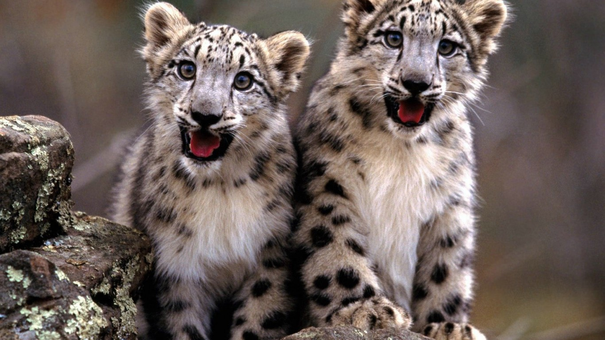

The snow leopard, known for its beautiful, thick fur, has a white, yellowish or soft gray coat with ringed spots of black on brown.
The markings help camouflage it from prey.
With their thick coats, heavy fur-lined tails and paws covered with fur, snow leopards are perfectly adapted to the cold and dry habitats in which they live.
For many centuries this magnificent cat was the king of the mountains.
The mountains were rich with their prey such as wild sheep, ibex, marmots and hares.
Snow leopards are found in twelve countries including China, India, Pakistan and Russia however, their population is dropping at an alarming rate.
The four most common reasons for the decline in leopard numbers are:
Poaching
Armed Conflict
Scarce Prey
Climate Change
"We still do not have any solid estimates of how many snow leopards there really are.
But we do know that we are losing cats at an alarming rate, perhaps as many as one per day." - Snow Leopard Trust